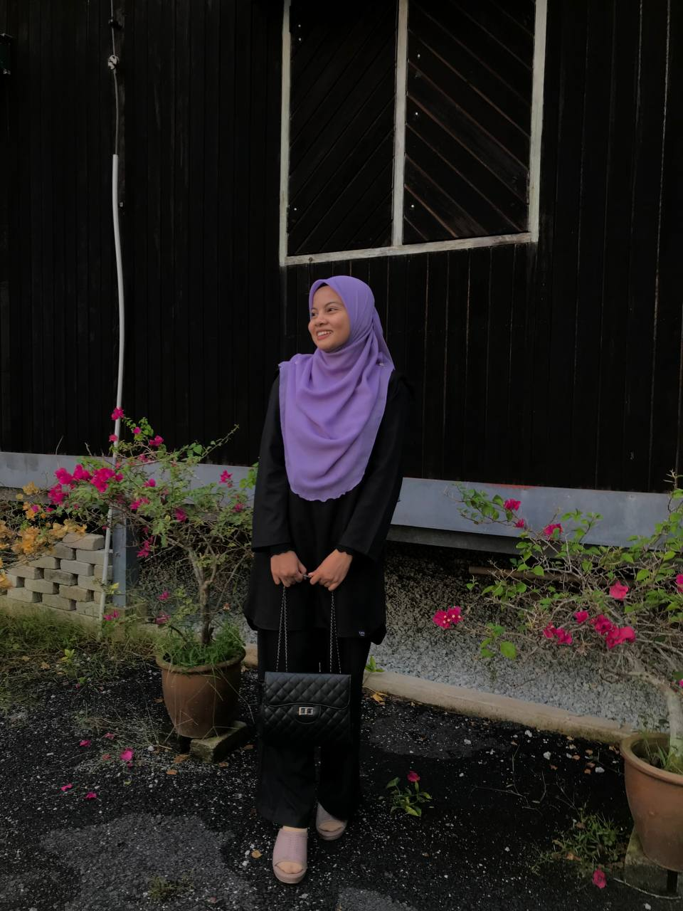

| HOMEPAGE | BIODATA | EXPERIENCE | EDUCATION | FAMILY | GALLERY | CONTACT |
|---|

Hey, since you're on my site, allow me to introduce myself. When you know yourself so well, it can be difficult to know where to begin with an introduction. Let me try to see what sort of impression you have of me based on my self-description. I'm hoping that there isn't a huge difference between how I see myself and how you see me. Here we go. My name is Rosyidah Binti Azmi and you can call me Rose. Twenty one is my age. My hometown is Kuala Berang in Terengganu. In Kuala Terengganu's Sultananah Nur Zahirah Hospital, I was born. Next, I have 3 brothers and 5 sisters, making me the youngest member of my family. My mother is a businesswoman right now, and my father has already passed away. I am currently a diploma student at the UITM Kelantan branch. I am a person who sees the good in everything. I enjoy a variety of activities, sights, and experiences. I enjoy talking and listening as well as reading and writing. I also enjoy dreaming and thinking. I enjoy listening to music, seeing the sunrise in the morning, and enjoying the moonlight at night. I also enjoy the springtime blooms, the summer rain, the fall foliage, and the winter snow. I enjoy going to bed early and waking up late; I enjoy being by myself and enjoying being surrounded by others. I also wanted to be a great psychologist, like William James or Sigmund Freud, who could read people’s mind. Of course, I am nowhere close to these people, yet. I am just someone who does some teaching, some research, and some writing. But my dream is still alive. This is a brief introduction of myself. Thank you.